Início / Imóveis
Catálogo completo.
Todos os imóveis disponíveis hoje, com preço, fotos e descrição. Filtre por finalidade, tipo, bairro e quartos, ou guarde favoritos para comparar depois.
41 imóveis

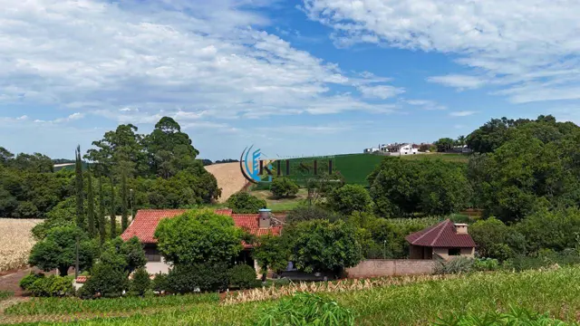
CH0007ChácaraChácara com 3 quartos, 10.000 m²
R$ 1.200.0003 quartos1 banheiro10.000 m²
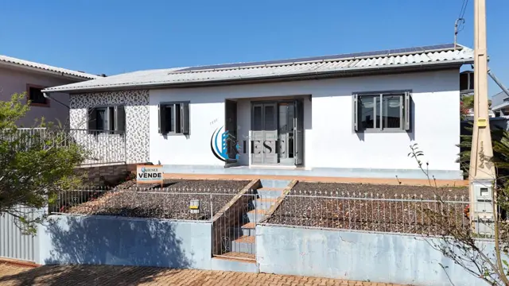
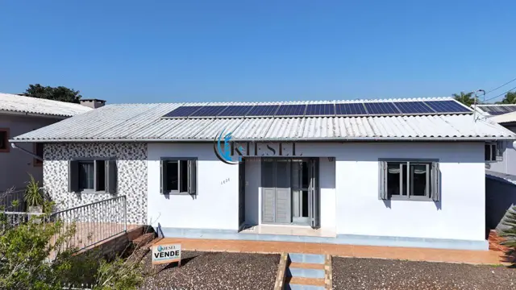
CA0032CasaCasa com 3 quartos, 149 m²
R$ 680.0003 quartos2 banheiros2 vagas149 m²
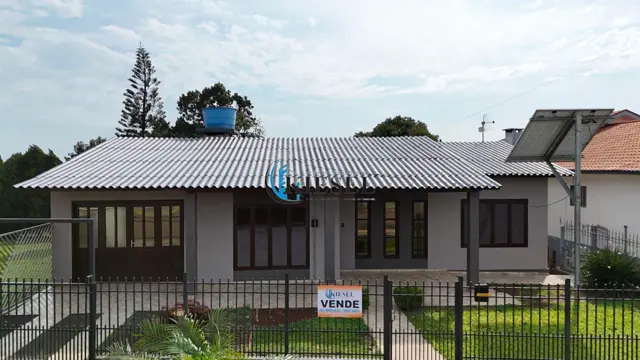
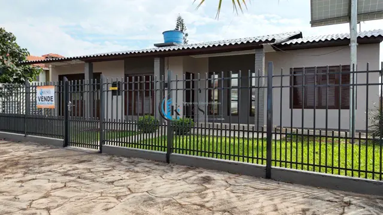
CA0033CasaCasa com 3 quartos, 135 m²
R$ 590.0003 quartos2 banheiros1 vaga135 m²

 CA0036Casa
CA0036CasaCasa com 2 quartos, 105 m²
R$ 550.0002 quartos1 banheiro105 m²
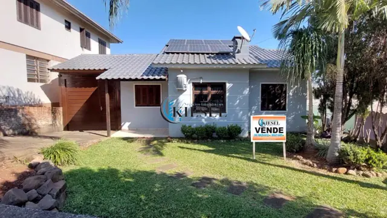
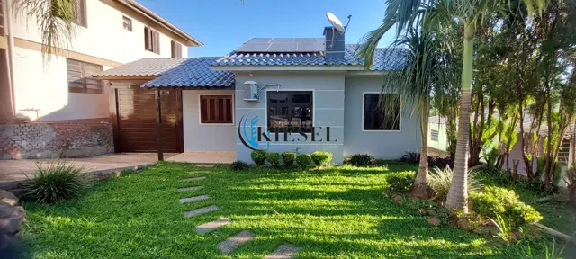
CA0034CasaCasa com 3 quartos, 95 m²
R$ 420.0003 quartos1 banheiro2 vagas95 m²

 CA0045Casa
CA0045CasaCasa com 3 quartos, 110 m²
R$ 380.0003 quartos2 banheiros110 m²

 CA0038Casa
CA0038CasaCasa com 3 quartos, 109 m²
R$ 365.0003 quartos2 banheiros109 m²

 CA0004Casa
CA0004CasaCasa com 2 quartos, 125 m²
R$ 320.0002 quartos2 banheiros4 vagas125 m²

 TE0023Terreno
TE0023TerrenoTerreno, 300 m²
R$ 115.000300 m²
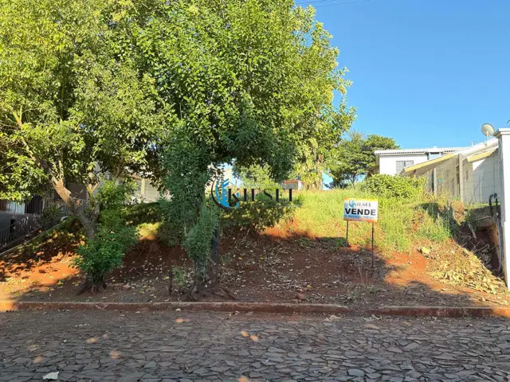
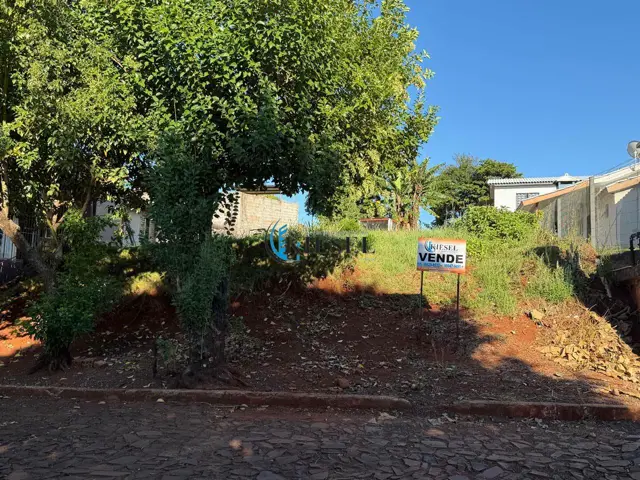
TE0026TerrenoTerreno, 344 m²
R$ 115.000344 m²

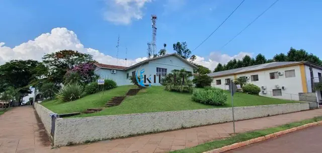
CA0018CasaCasa com 4 quartos, 300 m²
R$ 1.700.0004 quartos3 banheiros2 vagas300 m²

 CA0044Casa
CA0044CasaCasa com 2 quartos, 303 m²
R$ 1.350.0002 quartos2 banheiros2 vagas303 m²

 CA0035Casa
CA0035CasaCasa com 3 quartos, 220 m²
R$ 1.250.0003 quartos2 banheiros3 vagas220 m²

 CH0005Chácara
CH0005ChácaraChácara com 3 quartos, 3 hectares
R$ 950.0003 quartos1 banheiro2,8 ha

 CH0002Chácara
CH0002ChácaraChácara com 3 quartos, 4.500 m²
R$ 900.0003 quartos1 banheiro2 vagas4.500 m²

 CA0047Casa
CA0047CasaCasa com 3 quartos, 132 m²
R$ 775.0003 quartos132 m²
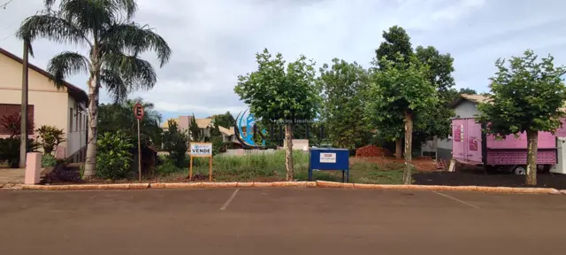
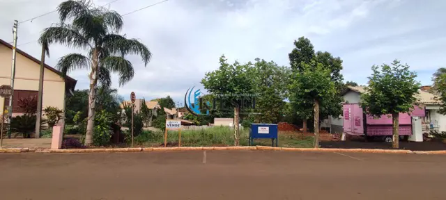
TE0015TerrenoTerreno, 973 m²
R$ 650.000973 m²
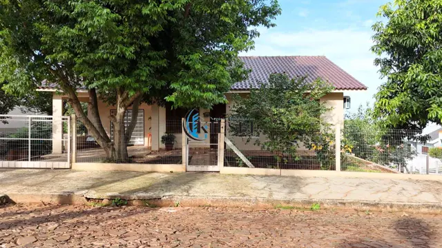
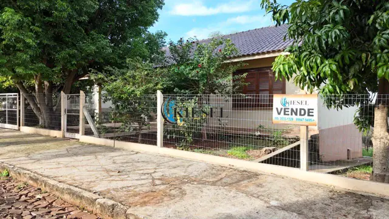
CA0041CasaCasa com 3 quartos, 140 m²
R$ 650.0003 quartos2 banheiros140 m²

 CA0046Casa
CA0046CasaCasa com 2 quartos, 100 m²
R$ 580.0002 quartos100 m²
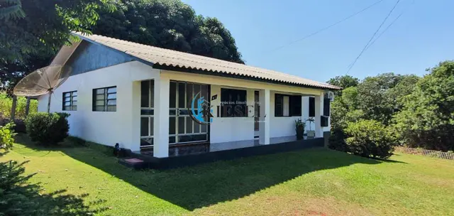
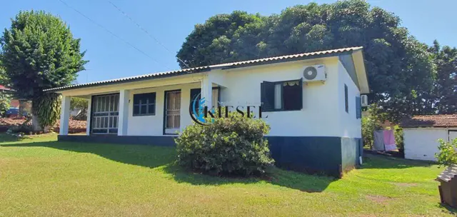
CA0003CasaCasa com 3 quartos, 140 m²
R$ 470.0003 quartos1 banheiro2 vagas140 m²
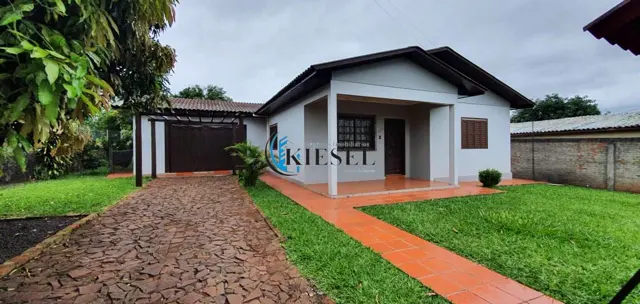
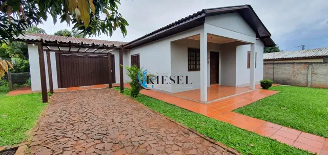
CA0005CasaCasa com 3 quartos, 194 m²
R$ 420.0003 quartos2 banheiros2 vagas194 m²
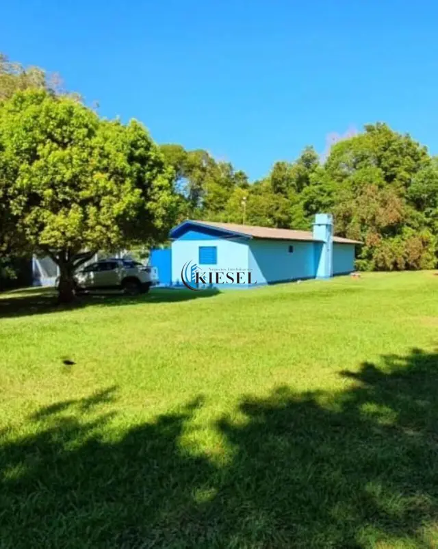
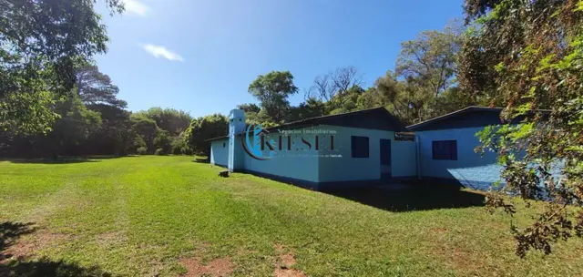
CH0001ChácaraChácara com 7 quartos, 10.000 m²
R$ 420.0007 quartos2 banheiros10.000 m²

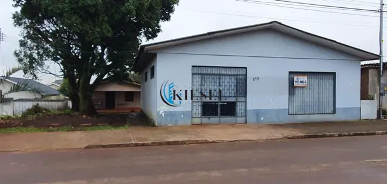
PR0001PrédioPrédio, 150 m²
R$ 400.0001 banheiro150 m²

 CA0040Casa
CA0040CasaCasa com 3 quartos, 147 m²
R$ 365.0003 quartos2 banheiros3 vagas147 m²
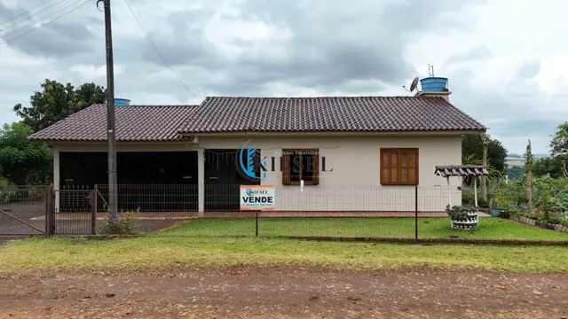
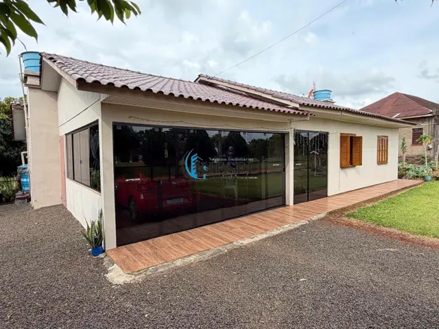
CH0006ChácaraChácara com 2 quartos, 2.520 m²
R$ 350.0002 quartos2 banheiros2 vagas2.520 m²

 TE0028Terreno
TE0028TerrenoTerreno, 987 m²
R$ 340.000987 m²

 CA0002Casa
CA0002CasaCasa com 2 quartos, 70 m²
R$ 335.0002 quartos2 banheiros70 m²
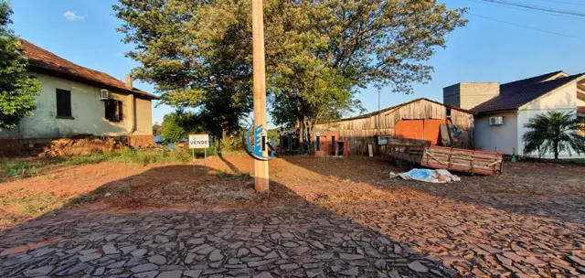
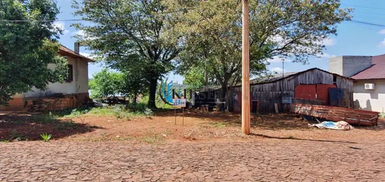
TE0012TerrenoTerreno, 936 m²
R$ 300.000936 m²

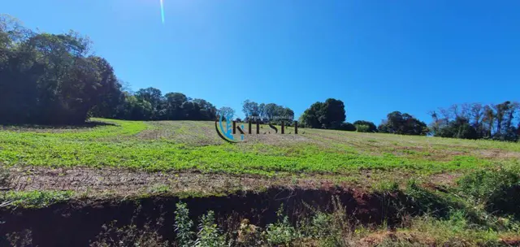
AR0001Área ruralÁrea, 18.089 m²
R$ 270.00018.089 m²
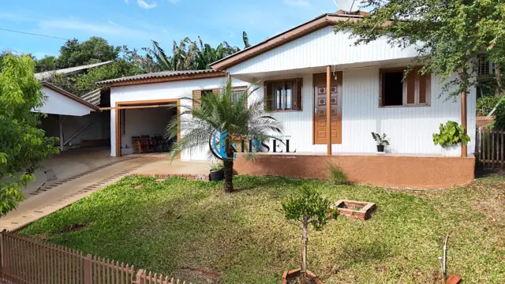
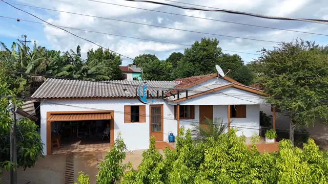
CA0030CasaCasa com 2 quartos, 119 m²
R$ 260.0002 quartos2 banheiros2 vagas119 m²
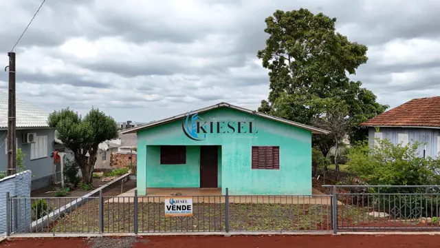
 CA0039Casa
CA0039CasaCasa com 2 quartos, 60 m²
R$ 220.0002 quartos1 banheiro60 m²
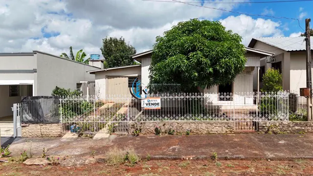
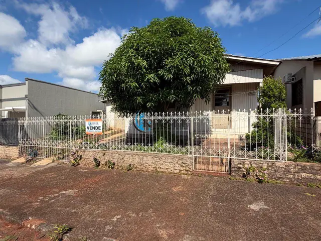
CA0042CasaCasa com 3 quartos, 110 m²
R$ 220.0003 quartos1 banheiro110 m²

 TE0008Terreno
TE0008TerrenoTerreno, 441 m²
R$ 170.000441 m²

 TE0007Terreno
TE0007TerrenoTerreno, 569 m²
R$ 150.000569 m²

 TE0025Terreno
TE0025TerrenoTerreno, 400 m²
R$ 125.000400 m²
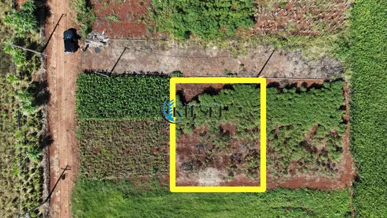
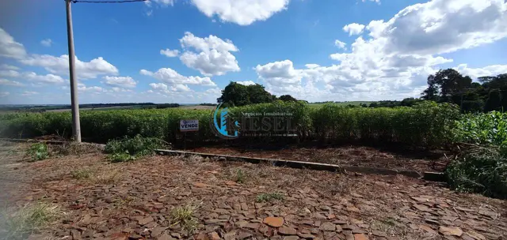
TE0019TerrenoTerreno, 333 m²
R$ 110.000333 m²
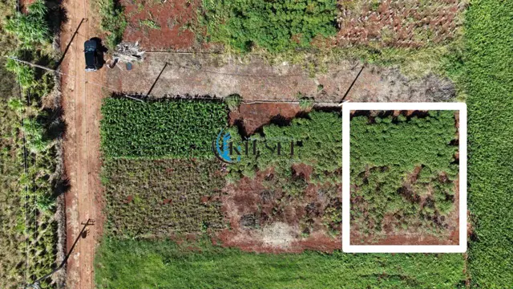
 TE0020Terreno
TE0020TerrenoTerreno, 334 m²
R$ 110.000334 m²
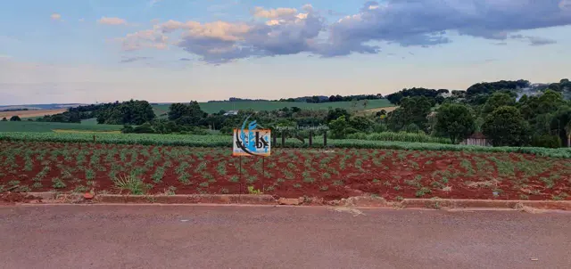
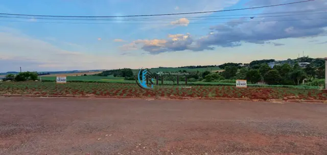
TE0017TerrenoTerreno, 374 m²
R$ 80.000374 m²
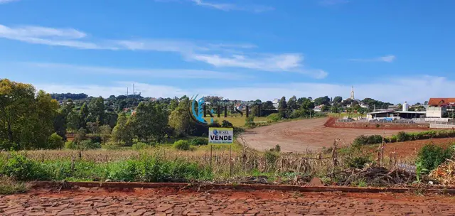
TE0018TerrenoTerreno, 375 m²
R$ 75.000375 m²

 SA0002Sala comercial · aluguel
SA0002Sala comercial · aluguelSala, 1 m²
R$ 1.900/mês1 banheiro

 SA0003Sala comercial · aluguel
SA0003Sala comercial · aluguelSala, 80 m²
R$ 1.300/mês80 m²
Nenhum imóvel com esses filtros.
Tente outro bairro ou tipo, ou encomende o imóvel que você procura.